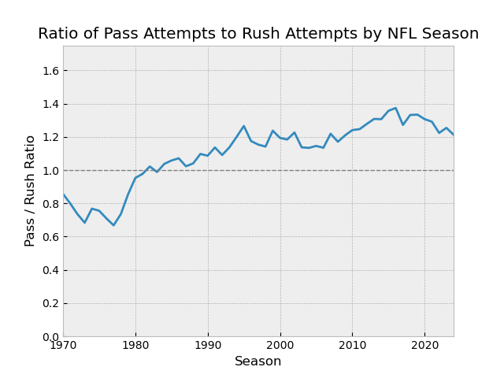

How Have Rush and Pass Attempts Changed Over Time?
This analysis explores how the balance between rushing and passing has shifted in the NFL from 1970 to the present,
using per-game averages per season from o_stats_per_game_avg_since_1970 in nfldb_queries.py.
Why ask this question?
Turn on any recent NFL game and you will see the importance of passing the football. You'll hear announcers talk about how important the quarterback is. You'll likely see more passes attempts than rushes. You may even assume this has always been the case.
But has it? Has passing always been more prevalent than rushing? By looking at historical NFL data, we can understand more about the history of the league as a whole. Asking and answering this question will give us more than numbers—it will tell a piece of the story the NFL.
1. Data Source
Data comes from nfldb and is aggregated by season to show per-game averages of rushing and passing attempts.
Below is the SQL query used to retrieve the main dataset.
SELECT season,
AVG(games) AS games,
AVG(rush_attempts) / games AS rush_attempts,
AVG(rush_yards) / games AS rush_yards,
AVG(rush_tds) / games AS rush_tds,
AVG(fumbles) / games AS fumbles,
AVG(rush_expected_points) / games AS rush_expected_points,
AVG(pass_attempts) / games AS pass_attempts,
AVG(completions) / games AS completions ,
AVG(pass_yards + sack_yards) / games AS pass_yards,
AVG(pass_tds) / games AS pass_touchdowns,
AVG(interceptions) / games AS interceptions,
AVG(sacks) / games AS sacks,
AVG(sack_yards) / games AS sack_yards_lost,
AVG( fourth_quarter_comebacks) / games AS fourth_quarter_comebacks,
AVG(game_winning_drives) / games AS game_winning_drives,
AVG(pass_expected_points) / games AS pass_expected_points,
AVG(pass_yards + sack_yards + rush_yards) / games AS total_yards
FROM season_offensive_stats AS "sos"
WHERE season > 1969
GROUP BY season
2. Exploratory Analysis
Historical per-game averages for yards gained for both play types were calculated across all seasons to identify long-term trends. The same was done for the amount of pass and rush attempts.
I also calculated the ratio of pass attempts to rush attempts per game by season to make an easy metric to show the frequency of passes to rushes over time.
Additionally, I wanted to know when that ratio increased the most year over year. Below, you'll find the SQL query which shows the 1979 season is when the ratio increased the most.
Show Query
WITH o_stats AS (
SELECT season,
AVG(games) AS games,
AVG(rush_attempts) / games AS rush_attempts,
AVG(rush_yards) / games AS rush_yards,
AVG(rush_tds) / games AS rush_tds,
AVG(fumbles) / games AS fumbles,
AVG(rush_expected_points) / games AS rush_expected_points,
AVG(pass_attempts) / games AS pass_attempts,
AVG(completions) / games AS completions ,
AVG(pass_yards + sack_yards) / games AS pass_yards,
AVG(pass_tds) / games AS pass_touchdowns,
AVG(interceptions) / games AS interceptions,
AVG(sacks) / games AS sacks,
AVG(sack_yards) / games AS sack_yards_lost,
AVG(fourth_quarter_comebacks) / games AS fourth_quarter_comebacks,
AVG(game_winning_drives) / games AS game_winning_drives,
AVG(pass_expected_points) / games AS pass_expected_points,
AVG(pass_yards + sack_yards + rush_yards) / games AS total_yards
FROM season_offensive_stats AS sos
WHERE season > 1969
GROUP BY season
)
SELECT season,
pass_attempts,
rush_attempts,
(pass_attempts / rush_attempts) AS pass_rush_ratio,
(pass_attempts / rush_attempts)
- LAG(pass_attempts / rush_attempts) OVER (ORDER BY season) AS yoy_pass_rush_diff
FROM o_stats
ORDER BY yoy_pass_rush_diff DESC;
3. Visualizations
The following charts visualize the results of these analyses.
These two charts show that passing is now the primary way teams both gain yards and call plays. Examining the data more closely, every season after 1981 teams have averaged more passes than rushes per game.

Click here to see the code for this visual.
This chart shows the ratio of pass attempts to rush attempts over time. You can more clearly see that passes are much more common than rush attempts. The NFL is a passing league.
Click here to see the code for this visual.
4. Detailed Results
Below you can see the full set of data that went into building the analysis.
Full Offensive Data By Season Averages
| season | games | rush_attempts | rush_yards | rush_tds | fumbles | rush_expected_points | pass_attempts | completions | pass_yards | pass_touchdowns | interceptions | sacks | sack_yards_lost | fourth_quarter_comebacks | game_winning_drives | pass_expected_points | total_yards |
|---|---|---|---|---|---|---|---|---|---|---|---|---|---|---|---|---|---|
| 1970.0 | 14.0 | 31.406593406593405 | 120.38461538461539 | 0.804945054945055 | 1.8269230769230769 | nan | 26.912087912087912 | 13.758241758241757 | 181.05494505494508 | 1.1730769230769231 | 1.4010989010989012 | 2.3956043956043955 | 19.66758241758242 | 0.11564625850340136 | 0.11904761904761905 | nan | 301.4395604395604 |
| 1971.0 | 14.0 | 32.35164835164835 | 130.12912087912088 | 0.9148351648351649 | 2.1016483516483517 | nan | 25.857142857142858 | 13.153846153846155 | 173.77197802197801 | 1.0686813186813187 | 1.4945054945054945 | 2.10989010989011 | 18.052197802197803 | 0.125 | 0.13392857142857142 | nan | 303.9010989010989 |
| 1972.0 | 14.0 | 33.67032967032967 | 139.35164835164835 | 1.0 | 2.1126373626373627 | nan | 24.755494505494507 | 12.79945054945055 | 168.75 | 1.10989010989011 | 1.3186813186813187 | 2.090659340659341 | 16.675824175824175 | 0.1279761904761905 | 0.13988095238095238 | nan | 308.10164835164835 |
| 1973.0 | 14.0 | 35.53846153846154 | 144.37912087912088 | 0.9065934065934066 | 2.258241758241758 | nan | 24.299450549450547 | 12.645604395604396 | 159.3653846153846 | 1.0384615384615385 | 1.2912087912087913 | 2.3626373626373627 | 18.43681318681319 | 0.09937888198757763 | 0.09316770186335403 | nan | 303.7445054945055 |
| 1974.0 | 14.0 | 34.35989010989011 | 133.2967032967033 | 1.0027472527472527 | 1.9615384615384615 | nan | 26.39835164835165 | 13.848901098901099 | 171.40384615384616 | 1.032967032967033 | 1.3736263736263736 | 2.25 | 18.15934065934066 | 0.12732919254658384 | 0.15838509316770186 | nan | 304.70054945054943 |
| 1975.0 | 14.0 | 36.26098901098901 | 145.4945054945055 | 1.1346153846153846 | 2.2335164835164836 | nan | 27.39835164835165 | 14.37087912087912 | 182.9532967032967 | 1.1895604395604396 | 1.4642857142857142 | 2.491758241758242 | 20.162087912087912 | 0.12111801242236024 | 0.17701863354037267 | nan | 328.44780219780216 |
| 1976.0 | 14.0 | 36.890306122448976 | 150.67346938775512 | 1.056122448979592 | 2.262755102040816 | nan | 26.1734693877551 | 13.650510204081632 | 173.44387755102042 | 1.1020408163265307 | 1.2678571428571428 | 2.6122448979591835 | 21.413265306122447 | 0.11180124223602485 | 0.16149068322981366 | nan | 324.1173469387755 |
| 1977.0 | 14.0 | 37.37244897959183 | 143.87755102040816 | 0.8979591836734694 | 2.0790816326530615 | nan | 24.964285714285715 | 12.811224489795919 | 162.2295918367347 | 0.9897959183673469 | 1.4336734693877553 | 2.436224489795918 | 20.341836734693878 | 0.09428571428571429 | 0.12571428571428572 | nan | 306.10714285714283 |
| 1978.0 | 16.0 | 35.88169642857143 | 141.83035714285714 | 1.0133928571428572 | 2.1316964285714284 | nan | 26.404017857142858 | 14.013392857142858 | 177.58258928571428 | 1.0446428571428572 | 1.4263392857142858 | 2.279017857142857 | 18.747767857142858 | 0.1111111111111111 | 0.1550925925925926 | nan | 319.41294642857144 |
| 1979.0 | 16.0 | 33.890625 | 135.56473214285714 | 1.0870535714285714 | 2.0111607142857144 | nan | 28.970982142857142 | 15.674107142857142 | 199.04017857142858 | 1.2008928571428572 | 1.3325892857142858 | 2.359375 | 18.662946428571427 | 0.13020833333333334 | 0.1640625 | nan | 334.6049107142857 |
| 1980.0 | 16.0 | 32.107142857142854 | 127.53348214285714 | 0.9620535714285714 | 1.9084821428571428 | nan | 30.591517857142858 | 17.185267857142858 | 214.140625 | 1.3526785714285714 | 1.3995535714285714 | 2.3013392857142856 | 18.185267857142858 | 0.109375 | 0.15848214285714285 | nan | 341.67410714285717 |
| 1981.0 | 16.0 | 32.38392857142857 | 130.14285714285714 | 0.984375 | 2.1473214285714284 | nan | 31.651785714285715 | 17.287946428571427 | 222.59151785714286 | 1.3191964285714286 | 1.359375 | 2.279017857142857 | 18.232142857142858 | 0.12 | 0.1475 | nan | 352.734375 |
| 1982.0 | 9.0 | 30.805555555555557 | 117.77380952380953 | 0.9166666666666666 | 2.0952380952380953 | nan | 31.480158730158728 | 17.753968253968253 | 220.86111111111111 | 1.2698412698412698 | 1.3849206349206349 | 2.6706349206349205 | 21.432539682539684 | 0.16425120772946858 | 0.18840579710144928 | nan | 338.63492063492066 |
| 1983.0 | 16.0 | 31.720982142857142 | 129.73660714285714 | 0.9754464285714286 | 2.1361607142857144 | nan | 31.354910714285715 | 17.841517857142858 | 225.27232142857142 | 1.3950892857142858 | 1.3839285714285714 | 2.7120535714285716 | 20.645089285714285 | 0.11805555555555555 | 0.16203703703703703 | nan | 355.00892857142856 |
| 1984.0 | 16.0 | 30.828125 | 123.890625 | 0.9151785714285714 | 1.9508928571428572 | nan | 31.975446428571427 | 18.026785714285715 | 228.19866071428572 | 1.3727678571428572 | 1.3035714285714286 | 2.9308035714285716 | 22.310267857142858 | 0.13194444444444445 | 0.1712962962962963 | nan | 352.0892857142857 |
| 1985.0 | 16.0 | 30.4375 | 124.93080357142857 | 0.9888392857142857 | 1.9910714285714286 | nan | 32.19419642857143 | 17.658482142857142 | 226.60267857142858 | 1.3348214285714286 | 1.34375 | 2.9151785714285716 | 22.089285714285715 | 0.12760416666666666 | 0.16666666666666666 | nan | 351.53348214285717 |
| 1986.0 | 16.0 | 30.154017857142858 | 118.6875 | 0.8950892857142857 | 2.03125 | nan | 32.296875 | 17.888392857142858 | 225.73214285714286 | 1.3080357142857142 | 1.296875 | 2.674107142857143 | 20.194196428571427 | 0.11197916666666667 | 0.15364583333333334 | nan | 344.41964285714283 |
| 1987.0 | 15.0 | 31.402380952380952 | 123.91428571428573 | 0.8595238095238095 | 2.164285714285714 | nan | 32.121428571428574 | 17.60952380952381 | 223.52857142857144 | 1.454761904761905 | 1.2857142857142856 | 2.6333333333333333 | 19.60952380952381 | 0.136 | 0.17333333333333334 | nan | 347.4428571428571 |
| 1988.0 | 16.0 | 30.314732142857142 | 121.41741071428571 | 0.9464285714285714 | 1.8392857142857142 | nan | 31.542410714285715 | 17.120535714285715 | 217.93526785714286 | 1.2410714285714286 | 1.234375 | 2.310267857142857 | 17.276785714285715 | 0.125 | 0.16 | nan | 339.35267857142856 |
| 1989.0 | 16.0 | 29.169642857142858 | 115.28125 | 0.8660714285714286 | 1.8772321428571428 | nan | 32.004464285714285 | 17.857142857142858 | 228.69642857142858 | 1.2991071428571428 | 1.2477678571428572 | 2.466517857142857 | 17.816964285714285 | 0.1597222222222222 | 0.18981481481481483 | nan | 343.97767857142856 |
| 1990.0 | 16.0 | 27.772321428571427 | 113.86607142857143 | 0.8415178571428571 | 1.8080357142857142 | nan | 30.169642857142858 | 16.901785714285715 | 211.38392857142858 | 1.2834821428571428 | 1.0714285714285714 | 2.3839285714285716 | 16.631696428571427 | 0.1275 | 0.165 | nan | 325.25 |
| 1991.0 | 16.0 | 27.408482142857142 | 107.671875 | 0.7991071428571429 | 1.7410714285714286 | nan | 31.138392857142858 | 17.863839285714285 | 214.50892857142858 | 1.140625 | 1.0892857142857142 | 2.2142857142857144 | 15.395089285714286 | 0.1328125 | 0.18489583333333334 | nan | 322.18080357142856 |
| 1992.0 | 16.0 | 27.435267857142858 | 110.51116071428571 | 0.7433035714285714 | 1.7254464285714286 | nan | 29.928571428571427 | 17.198660714285715 | 205.38169642857142 | 1.1517857142857142 | 1.1584821428571428 | 2.544642857142857 | 17.738839285714285 | 0.13701923076923078 | 0.15865384615384615 | nan | 315.89285714285717 |
| 1993.0 | 16.0 | 28.3125 | 110.03348214285714 | 0.6785714285714286 | 1.6941964285714286 | nan | 32.174107142857146 | 18.640625 | 215.37946428571428 | 1.1540178571428572 | 1.046875 | 2.3549107142857144 | 14.767857142857142 | 0.1275 | 0.1575 | nan | 325.41294642857144 |
| 1994.0 | 16.0 | 28.013392857142858 | 104.26339285714286 | 0.7589285714285714 | 1.6138392857142858 | nan | 33.607142857142854 | 19.506696428571427 | 227.41964285714286 | 1.3013392857142858 | 1.0580357142857142 | 2.091517857142857 | 13.816964285714286 | 0.125 | 0.17 | nan | 331.6830357142857 |
| 1995.0 | 16.0 | 27.497916666666665 | 108.09583333333333 | 0.8020833333333334 | 1.6208333333333333 | nan | 34.78958333333333 | 20.24375 | 235.56041666666667 | 1.38125 | 1.0666666666666667 | 2.2416666666666667 | 14.777083333333334 | 0.09722222222222222 | 0.1527777777777778 | nan | 343.65625 |
| 1996.0 | 16.0 | 28.320833333333333 | 108.97083333333333 | 0.7583333333333333 | 1.6166666666666667 | nan | 33.2625 | 19.1625 | 222.21041666666667 | 1.3041666666666667 | 1.1291666666666667 | 2.3041666666666667 | 14.779166666666667 | 0.1375 | 0.17 | nan | 331.18125 |
| 1997.0 | 16.0 | 28.414583333333333 | 113.04166666666667 | 0.8 | 1.6625 | nan | 32.76875 | 18.425 | 219.35 | 1.2854166666666667 | 0.9979166666666667 | 2.6083333333333334 | 17.527083333333334 | 0.11830357142857142 | 0.16741071428571427 | nan | 332.39166666666665 |
| 1998.0 | 16.0 | 28.266666666666666 | 112.69375 | 0.7895833333333333 | 1.5083333333333333 | nan | 32.26875 | 18.2625 | 221.0125 | 1.3708333333333333 | 1.0604166666666666 | 2.5145833333333334 | 16.045833333333334 | 0.11637931034482758 | 0.14655172413793102 | nan | 333.70625 |
| 1999.0 | 16.0 | 27.31451612903226 | 106.4899193548387 | 0.7318548387096774 | 1.6149193548387097 | nan | 33.79032258064516 | 19.288306451612904 | 228.33467741935485 | 1.340725806451613 | 1.1330645161290323 | 2.5181451612903225 | 16.058467741935484 | 0.13333333333333333 | 0.15625 | nan | 334.82459677419354 |
| 2000.0 | 16.0 | 27.574596774193548 | 112.55846774193549 | 0.8306451612903226 | 1.564516129032258 | -5.428104838709678 | 32.90725806451613 | 19.14717741935484 | 222.0383064516129 | 1.278225806451613 | 1.0705645161290323 | 2.4838709677419355 | 15.171370967741936 | 0.11666666666666667 | 0.175 | -3.042056451612903 | 334.5967741935484 |
| 2001.0 | 16.0 | 27.552419354838708 | 111.7741935483871 | 0.7358870967741935 | 1.6633064516129032 | -5.093165322580645 | 32.622983870967744 | 19.237903225806452 | 221.04637096774192 | 1.280241935483871 | 1.0987903225806452 | 2.411290322580645 | 15.23991935483871 | 0.13793103448275862 | 0.1810344827586207 | -3.51625 | 332.820564516129 |
| 2002.0 | 16.0 | 27.54296875 | 116.130859375 | 0.8984375 | 1.5546875 | -0.9696679687499999 | 33.7734375 | 20.14453125 | 226.955078125 | 1.35546875 | 1.03125 | 2.294921875 | 14.7265625 | 0.1310483870967742 | 0.17338709677419356 | 0.8764843750000001 | 343.0859375 |
| 2003.0 | 16.0 | 28.3359375 | 117.853515625 | 0.833984375 | 1.57421875 | -4.77494140625 | 32.212890625 | 18.935546875 | 213.802734375 | 1.27734375 | 1.05078125 | 2.1328125 | 13.357421875 | 0.1125 | 0.16458333333333333 | -3.2590625 | 331.65625 |
| 2004.0 | 16.0 | 28.1796875 | 116.619140625 | 0.8125 | 1.55078125 | -4.86732421875 | 31.94140625 | 19.0859375 | 225.26953125 | 1.4296875 | 1.0234375 | 2.3359375 | 14.728515625 | 0.11290322580645161 | 0.16330645161290322 | -1.35498046875 | 341.888671875 |
| 2005.0 | 16.0 | 28.076171875 | 112.466796875 | 0.841796875 | 1.576171875 | -5.3298046875 | 32.15625 | 19.12109375 | 218.205078125 | 1.2578125 | 0.98828125 | 2.30859375 | 14.751953125 | 0.10546875 | 0.150390625 | -2.37640625 | 330.671875 |
| 2006.0 | 16.0 | 28.216796875 | 117.306640625 | 0.828125 | 1.494140625 | -4.739921875 | 32.009765625 | 19.1328125 | 219.291015625 | 1.265625 | 1.015625 | 2.271484375 | 14.478515625 | 0.11491935483870967 | 0.16129032258064516 | -2.82646484375 | 336.59765625 |
| 2007.0 | 16.0 | 27.31640625 | 110.91796875 | 0.75390625 | 1.5625 | -4.3861328125 | 33.291015625 | 20.361328125 | 228.263671875 | 1.40625 | 1.04296875 | 2.15234375 | 13.962890625 | 0.10887096774193548 | 0.1431451612903226 | -2.12203125 | 339.181640625 |
| 2008.0 | 16.0 | 27.576171875 | 115.95703125 | 0.9296875 | 1.396484375 | -4.2112109375 | 32.27734375 | 19.689453125 | 224.15234375 | 1.26171875 | 0.908203125 | 2.0234375 | 12.869140625 | 0.13541666666666666 | 0.175 | -1.69494140625 | 340.109375 |
| 2009.0 | 16.0 | 27.515625 | 116.677734375 | 0.837890625 | 1.46484375 | -4.418359375 | 33.267578125 | 20.2578125 | 232.259765625 | 1.38671875 | 1.025390625 | 2.150390625 | 13.80078125 | 0.12298387096774194 | 0.17943548387096775 | -1.425859375 | 348.9375 |
| 2010.0 | 16.0 | 27.1875 | 114.466796875 | 0.779296875 | 1.42578125 | -4.77697265625 | 33.728515625 | 20.490234375 | 236.22265625 | 1.466796875 | 0.998046875 | 2.20703125 | 14.67578125 | 0.11895161290322581 | 0.16330645161290322 | -0.87392578125 | 350.689453125 |
| 2011.0 | 16.0 | 27.287109375 | 117.14453125 | 0.78125 | 1.26953125 | -4.10220703125 | 34.00390625 | 20.4375 | 244.78515625 | 1.455078125 | 0.98828125 | 2.3203125 | 15.095703125 | 0.13306451612903225 | 0.16733870967741934 | -0.94373046875 | 361.9296875 |
| 2012.0 | 16.0 | 27.197265625 | 115.916015625 | 0.783203125 | 1.32421875 | -3.9489648437500002 | 34.7421875 | 21.158203125 | 245.998046875 | 1.478515625 | 0.9140625 | 2.283203125 | 14.712890625 | 0.13911290322580644 | 0.16532258064516128 | 0.160234375 | 361.9140625 |
| 2013.0 | 16.0 | 27.091796875 | 112.880859375 | 0.80078125 | 1.279296875 | -0.89796875 | 35.421875 | 21.68359375 | 252.298828125 | 1.5703125 | 0.98046875 | 2.529296875 | 16.701171875 | 0.14112903225806453 | 0.17540322580645162 | 2.9704296875000002 | 365.1796875 |
| 2014.0 | 16.0 | 26.734375 | 111.33203125 | 0.7421875 | 1.30859375 | -1.2223046875 | 34.919921875 | 21.875 | 251.75390625 | 1.576171875 | 0.87890625 | 2.3671875 | 14.943359375 | 0.12903225806451613 | 0.1431451612903226 | 4.18822265625 | 363.0859375 |
| 2015.0 | 16.0 | 26.34375 | 108.8359375 | 0.712890625 | 1.294921875 | -1.4028125 | 35.73828125 | 22.513671875 | 259.158203125 | 1.64453125 | 0.8515625 | 2.318359375 | 15.337890625 | 0.130859375 | 0.169921875 | 4.1126171875 | 367.994140625 |
| 2016.0 | 16.0 | 26.017578125 | 108.912109375 | 0.865234375 | 1.26953125 | -2.92330078125 | 35.732421875 | 22.51171875 | 255.59375 | 1.53515625 | 0.810546875 | 2.18359375 | 14.111328125 | 0.15732758620689655 | 0.1810344827586207 | 2.91759765625 | 364.505859375 |
| 2017.0 | 16.0 | 26.865234375 | 109.70703125 | 0.7421875 | 1.2578125 | -4.75599609375 | 34.15625 | 21.203125 | 239.609375 | 1.447265625 | 0.83984375 | 2.333984375 | 15.25390625 | 0.10344827586206896 | 0.16810344827586207 | -0.35441406249999996 | 349.31640625 |
| 2018.0 | 16.0 | 25.921875 | 114.455078125 | 0.857421875 | 1.25390625 | -0.18605468749999998 | 34.513671875 | 22.38671875 | 254.427734375 | 1.654296875 | 0.818359375 | 2.501953125 | 16.66015625 | 0.138671875 | 0.171875 | 4.8788671875 | 368.8828125 |
| 2019.0 | 16.0 | 26.146484375 | 112.90234375 | 0.873046875 | 1.265625 | -0.6944921875 | 34.869140625 | 22.130859375 | 251.779296875 | 1.556640625 | 0.80078125 | 2.4921875 | 16.81640625 | 0.12083333333333333 | 0.16041666666666668 | 4.60263671875 | 364.681640625 |
| 2020.0 | 16.0 | 26.9375 | 118.8828125 | 1.0390625 | 1.166015625 | 0.7940039062500001 | 35.19140625 | 22.9609375 | 254.8828125 | 1.701171875 | 0.771484375 | 2.216796875 | 14.732421875 | 0.13169642857142858 | 0.16964285714285715 | 6.2681640625 | 373.765625 |
| 2021.0 | 17.0 | 26.641544117647058 | 115.24632352941177 | 0.9283088235294118 | 1.2003676470588236 | 0.2550367647058824 | 34.39705882352941 | 22.28125 | 244.11764705882354 | 1.5441176470588236 | 0.8088235294117647 | 2.286764705882353 | 15.803308823529411 | 0.13507625272331156 | 0.1786492374727669 | 4.492830882352941 | 359.3639705882353 |
| 2022.0 | 16.9375 | 27.15073529411765 | 121.12867647058823 | 0.8952205882352942 | 1.224264705882353 | 0.675422794117647 | 33.21507352941177 | 21.332720588235293 | 233.5202205882353 | 1.3786764705882353 | 0.7683823529411765 | 2.3841911764705883 | 15.803308823529411 | 0.1574952561669829 | 0.1859582542694497 | 3.0537132352941176 | 354.64889705882354 |
| 2023.0 | 17.0 | 26.84926470588235 | 112.65992647058823 | 0.8639705882352942 | 1.193014705882353 | -0.25090073529411766 | 33.6672794117647 | 21.705882352941178 | 236.33639705882354 | 1.3860294117647058 | 0.7904411764705882 | 2.5919117647058822 | 17.41176470588235 | 0.12144212523719165 | 0.16129032258064516 | 2.8054779411764708 | 348.99632352941177 |
| 2024.0 | 17.0 | 26.998161764705884 | 119.80514705882354 | 0.9393382352941176 | 1.1654411764705883 | 0.5271323529411764 | 32.74080882352941 | 21.376838235294116 | 233.5 | 1.4871323529411764 | 0.7113970588235294 | 2.4154411764705883 | 15.882352941176471 | 0.1213235294117647 | 0.16176470588235295 | 4.0431985294117645 | 353.30514705882354 |
Average Pass Attempts, Rush Attempts, and Pass / Rush Ratio by Season
| season | pass_attempts | rush_attempts | pass_rush_ratio |
|---|---|---|---|
| 1970.0 | 26.912087912087912 | 31.406593406593405 | 0.856892932120364 |
| 1971.0 | 25.857142857142858 | 32.35164835164835 | 0.7992527173913044 |
| 1972.0 | 24.755494505494507 | 33.67032967032967 | 0.7352317232375979 |
| 1973.0 | 24.299450549450547 | 35.53846153846154 | 0.6837507730364872 |
| 1974.0 | 26.39835164835165 | 34.35989010989011 | 0.7682897577356681 |
| 1975.0 | 27.39835164835165 | 36.26098901098901 | 0.7555875445109479 |
| 1976.0 | 26.1734693877551 | 36.890306122448976 | 0.7094945024548787 |
| 1977.0 | 24.964285714285715 | 37.37244897959183 | 0.6679863481228671 |
| 1978.0 | 26.404017857142858 | 35.88169642857143 | 0.7358631415241057 |
| 1979.0 | 28.970982142857142 | 33.890625 | 0.8548376473687677 |
| 1980.0 | 30.591517857142858 | 32.107142857142854 | 0.9527947719688544 |
| 1981.0 | 31.651785714285715 | 32.38392857142857 | 0.9773917838433969 |
| 1982.0 | 31.480158730158728 | 30.805555555555557 | 1.0218987504830606 |
| 1983.0 | 31.354910714285715 | 31.720982142857142 | 0.9884596439377947 |
| 1984.0 | 31.975446428571427 | 30.828125 | 1.037216711317066 |
| 1985.0 | 32.19419642857143 | 30.4375 | 1.0577148723965972 |
| 1986.0 | 32.296875 | 30.154017857142858 | 1.071063735287586 |
| 1987.0 | 32.121428571428574 | 31.402380952380952 | 1.022897869436652 |
| 1988.0 | 31.542410714285715 | 30.314732142857142 | 1.040497754215448 |
| 1989.0 | 32.004464285714285 | 29.169642857142858 | 1.0971839608203244 |
| 1990.0 | 30.169642857142858 | 27.772321428571427 | 1.0863205272464236 |
| 1991.0 | 31.138392857142858 | 27.408482142857142 | 1.1360860004886393 |
| 1992.0 | 29.928571428571427 | 27.435267857142858 | 1.0908795053291025 |
| 1993.0 | 32.174107142857146 | 28.3125 | 1.1363923052664775 |
| 1994.0 | 33.607142857142854 | 28.013392857142858 | 1.1996812749003982 |
| 1995.0 | 34.78958333333333 | 27.497916666666665 | 1.2651716039093872 |
| 1996.0 | 33.2625 | 28.320833333333333 | 1.1744887450345742 |
| 1997.0 | 32.76875 | 28.414583333333333 | 1.153237040838771 |
| 1998.0 | 32.26875 | 28.266666666666666 | 1.1415831367924527 |
| 1999.0 | 33.79032258064516 | 27.31451612903226 | 1.2370829642751697 |
| 2000.0 | 32.90725806451613 | 27.574596774193548 | 1.193390363383783 |
| 2001.0 | 32.622983870967744 | 27.552419354838708 | 1.1840333674813406 |
| 2002.0 | 33.7734375 | 27.54296875 | 1.2262090483619346 |
| 2003.0 | 32.212890625 | 28.3359375 | 1.136821064240419 |
| 2004.0 | 31.94140625 | 28.1796875 | 1.133490435264763 |
| 2005.0 | 32.15625 | 28.076171875 | 1.145321739130435 |
| 2006.0 | 32.009765625 | 28.216796875 | 1.1344223714265937 |
| 2007.0 | 33.291015625 | 27.31640625 | 1.2187187187187187 |
| 2008.0 | 32.27734375 | 27.576171875 | 1.170479495714994 |
| 2009.0 | 33.267578125 | 27.515625 | 1.2090431572969904 |
| 2010.0 | 33.728515625 | 27.1875 | 1.2405890804597701 |
| 2011.0 | 34.00390625 | 27.287109375 | 1.2461527449717271 |
| 2012.0 | 34.7421875 | 27.197265625 | 1.2774147217235188 |
| 2013.0 | 35.421875 | 27.091796875 | 1.3074760291255136 |
| 2014.0 | 34.919921875 | 26.734375 | 1.3061805961426067 |
| 2015.0 | 35.73828125 | 26.34375 | 1.3566132858837485 |
| 2016.0 | 35.732421875 | 26.017578125 | 1.3733953907364311 |
| 2017.0 | 34.15625 | 26.865234375 | 1.2713922210105417 |
| 2018.0 | 34.513671875 | 25.921875 | 1.331449668474985 |
| 2019.0 | 34.869140625 | 26.146484375 | 1.333607230895645 |
| 2020.0 | 35.19140625 | 26.9375 | 1.306409512761021 |
| 2021.0 | 34.39705882352941 | 26.641544117647058 | 1.2911060511971297 |
| 2022.0 | 33.21507352941177 | 27.15073529411765 | 1.2233581584292486 |
| 2023.0 | 33.6672794117647 | 26.84926470588235 | 1.253936738326715 |
| 2024.0 | 32.74080882352941 | 26.998161764705884 | 1.2127051133655613 |
Year Over Year Pass / Rush Ratio
| season | pass_attempts | rush_attempts | pass_rush_ratio | yoy_pass_rush_diff |
|---|---|---|---|---|
| 1979.0 | 28.970982142857142 | 33.890625 | 0.8548376473687677 | 0.11897450584466196 |
| 1980.0 | 30.591517857142858 | 32.107142857142854 | 0.9527947719688544 | 0.09795712460008676 |
| 1999.0 | 33.79032258064516 | 27.31451612903226 | 1.2370829642751697 | 0.09549982748271701 |
| 1974.0 | 26.39835164835165 | 34.35989010989011 | 0.7682897577356681 | 0.08453898469918086 |
| 2007.0 | 33.291015625 | 27.31640625 | 1.2187187187187187 | 0.08429634729212498 |
| 1978.0 | 26.404017857142858 | 35.88169642857143 | 0.7358631415241057 | 0.06787679340123864 |
| 1995.0 | 34.78958333333333 | 27.497916666666665 | 1.2651716039093872 | 0.06549032900898899 |
| 1994.0 | 33.607142857142854 | 28.013392857142858 | 1.1996812749003982 | 0.06328896963392072 |
| 2018.0 | 34.513671875 | 25.921875 | 1.331449668474985 | 0.0600574474644433 |
| 1989.0 | 32.004464285714285 | 29.169642857142858 | 1.0971839608203244 | 0.05668620660487633 |
| 2015.0 | 35.73828125 | 26.34375 | 1.3566132858837485 | 0.05043268974114179 |
| 1991.0 | 31.138392857142858 | 27.408482142857142 | 1.1360860004886393 | 0.049765473242215696 |
| 1984.0 | 31.975446428571427 | 30.828125 | 1.037216711317066 | 0.048757067379271324 |
| 1993.0 | 32.174107142857146 | 28.3125 | 1.1363923052664775 | 0.045512799937375004 |
| 1982.0 | 31.480158730158728 | 30.805555555555557 | 1.0218987504830606 | 0.04450696663966369 |
| 2002.0 | 33.7734375 | 27.54296875 | 1.2262090483619346 | 0.04217568088059398 |
| 2009.0 | 33.267578125 | 27.515625 | 1.2090431572969904 | 0.03856366158199642 |
| 2010.0 | 33.728515625 | 27.1875 | 1.2405890804597701 | 0.03154592316277971 |
| 2012.0 | 34.7421875 | 27.197265625 | 1.2774147217235188 | 0.031261976751791654 |
| 2023.0 | 33.6672794117647 | 26.84926470588235 | 1.253936738326715 | 0.030578579897466485 |
| 2013.0 | 35.421875 | 27.091796875 | 1.3074760291255136 | 0.030061307401994863 |
| 1981.0 | 31.651785714285715 | 32.38392857142857 | 0.9773917838433969 | 0.02459701187454244 |
| 1985.0 | 32.19419642857143 | 30.4375 | 1.0577148723965972 | 0.020498161079531174 |
| 1988.0 | 31.542410714285715 | 30.314732142857142 | 1.040497754215448 | 0.01759988477879615 |
| 2016.0 | 35.732421875 | 26.017578125 | 1.3733953907364311 | 0.01678210485268261 |
| 1986.0 | 32.296875 | 30.154017857142858 | 1.071063735287586 | 0.0133488628909888 |
| 2005.0 | 32.15625 | 28.076171875 | 1.145321739130435 | 0.011831303865671883 |
| 2011.0 | 34.00390625 | 27.287109375 | 1.2461527449717271 | 0.0055636645119570005 |
| 2019.0 | 34.869140625 | 26.146484375 | 1.333607230895645 | 0.0021575624206600086 |
| 2014.0 | 34.919921875 | 26.734375 | 1.3061805961426067 | -0.0012954329829069078 |
| 2004.0 | 31.94140625 | 28.1796875 | 1.133490435264763 | -0.003330628975656058 |
| 2001.0 | 32.622983870967744 | 27.552419354838708 | 1.1840333674813406 | -0.009356995902442433 |
| 1990.0 | 30.169642857142858 | 27.772321428571427 | 1.0863205272464236 | -0.01086343357390085 |
| 2006.0 | 32.009765625 | 28.216796875 | 1.1344223714265937 | -0.010899367703841145 |
| 1998.0 | 32.26875 | 28.266666666666666 | 1.1415831367924527 | -0.011653904046318386 |
| 1975.0 | 27.39835164835165 | 36.26098901098901 | 0.7555875445109479 | -0.012702213224720205 |
| 2021.0 | 34.39705882352941 | 26.641544117647058 | 1.2911060511971297 | -0.015303461563891174 |
| 1997.0 | 32.76875 | 28.414583333333333 | 1.153237040838771 | -0.021251704195803134 |
| 2020.0 | 35.19140625 | 26.9375 | 1.306409512761021 | -0.027197718134624127 |
| 1983.0 | 31.354910714285715 | 31.720982142857142 | 0.9884596439377947 | -0.03343910654526583 |
| 2024.0 | 32.74080882352941 | 26.998161764705884 | 1.2127051133655613 | -0.041231624961153734 |
| 1977.0 | 24.964285714285715 | 37.37244897959183 | 0.6679863481228671 | -0.041508154332011604 |
| 2000.0 | 32.90725806451613 | 27.574596774193548 | 1.193390363383783 | -0.04369260089138671 |
| 1992.0 | 29.928571428571427 | 27.435267857142858 | 1.0908795053291025 | -0.045206495159536786 |
| 1976.0 | 26.1734693877551 | 36.890306122448976 | 0.7094945024548787 | -0.04609304205606923 |
| 1987.0 | 32.121428571428574 | 31.402380952380952 | 1.022897869436652 | -0.048165865850934075 |
| 2008.0 | 32.27734375 | 27.576171875 | 1.170479495714994 | -0.04823922300372474 |
| 1973.0 | 24.299450549450547 | 35.53846153846154 | 0.6837507730364872 | -0.05148095020111065 |
| 1971.0 | 25.857142857142858 | 32.35164835164835 | 0.7992527173913044 | -0.05764021472905956 |
| 1972.0 | 24.755494505494507 | 33.67032967032967 | 0.7352317232375979 | -0.06402099415370655 |
| 2022.0 | 33.21507352941177 | 27.15073529411765 | 1.2233581584292486 | -0.06774789276788118 |
| 2003.0 | 32.212890625 | 28.3359375 | 1.136821064240419 | -0.0893879841215155 |
| 1996.0 | 33.2625 | 28.320833333333333 | 1.1744887450345742 | -0.09068285887481298 |
| 2017.0 | 34.15625 | 26.865234375 | 1.2713922210105417 | -0.10200316972588941 |
| 1970.0 | 26.912087912087912 | 31.406593406593405 | 0.856892932120364 | nan |
5. Interpretation
1979 was a huge turning point in the NFL. The pass to rush attempts ratio grew more that season than any other, and the game was never the same. In 1982, the ratio was higher than 1 for the first time, meaning that there more pass than rush attempts that year. In 1983 it dipped below 1, but that is the last year there were more rush attempts than pass attempts league-wide.
Was this all by chance? Was there a sudden influx of QB and WR talent and a dirth of RBs? Figuring out the why behind this change requires some outside research.
6. Conclusion
If you look at the history of rule changes in the NFL, 1978 has two key changes that partially explain the dominance passing has gained in the NFL:
1. Illegal Contact: Non-incidental contact after 5 yards from a defender was now illegal, where before it was illegal after 10 yards.
2. The rules for blocking were altered. Linemen were now able to extend their arms to block defenders instead of keeping their palms near their chest like a T-Rex. This made their job easier—especially for pass blocking.
The data shows there's been a huge uptick in passing in the history of the NFL, but why? The rules changed.
But why does this matter?
For the NFL, if they don't like their product, then they can change the rules and change the game. The NFL is a business, and football games are their product. The only way for them to iterate their product and force innovation is by tweaking rules.
For fans like me, this analysis shows me I need to pay attention to rule changes because they can impact what I see on the field, what postions are most important, and a host of other factors.